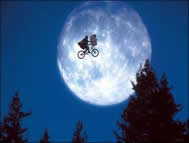
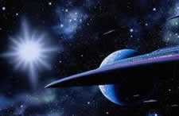
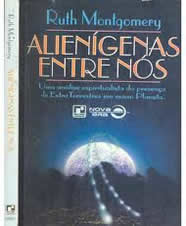
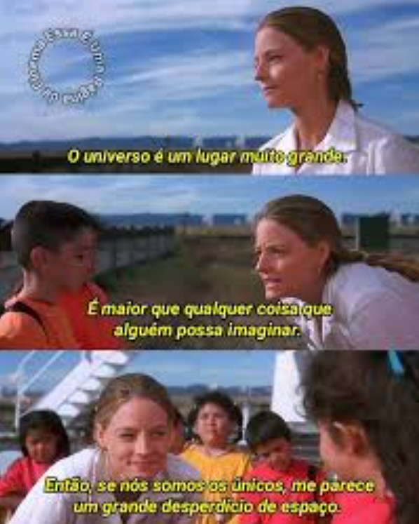

ETs e OVNIs

ETs = Extraterrestres
OVNI = Objeto Voador Não Identificado
Extraterrestres existem?
A nossa galáxia chama-se Via - Láctea, nela existem em torno de 170 bilhões de estrelas (170.000.000.000). No universo todo não dá para saber quantas galáxias existem, mais já foram descobertas bilhões de galáxias, sendo que dentro das galáxias existem mais bilhões de estrelas e planetas. Por esta idéia, muitas pessoas acreditam em ETs sem precisarem vê-los. Mas afinal ETs existem realmente?
Antigo astronauta da NASA afirma que esta é uma realidade escondida por todos os governos
Edgar Mitchell, antigo astronauta da NASA, que já esteve na Lua, garante que os extraterrestres existem e que durante a sua carreira teve conhecimento de várias visitas de OVNI (Objeto Voador Não Identificado) ao planeta Terra, todas elas escondidas, noticia o jornal inglês The Telegraph.
Em entrevista revelou que a tecnologia humana não é nem um pouco tão sofisticada como a dos alegados visitantes.O antigo astronauta acredita que não há dúvidas de que existe vida no universo. “Nós não estamos de todo sozinhos. Estou certo disso”. Edgar Mitchell considera-se privilegiado por saber que já fomos visitados por extraterrestres no nosso planeta. O fenômeno dos OVNI é real.
Uma análise espiritualista da presença de Extra Terrestres em nosso Planeta.
Texto retirado do livro: Alienígenas entre nós de Ruth Montgomery
Os Guias afirmam que, embora os seres espaciais tenham visitado a Terra por milênios, eles estão agora “afluindo em grande número, como raramente ocorreu antes, com o objetivo de despertar os habitantes deste planeta e os ajudar a compreender que sua destruição é iminente”, a não ser que criem melhores mecanismos para solucionarem disputas entre povos. “Estão horrorizados com o rumo que o planeta Terra e seus habitantes tomaram nas últimas décadas”, prosseguiram os Guias, “inclusive com ameaças de armas nucleares contra outras nações e repressão à liberdade humana. Não conseguirão impedir a mudança do eixo da Terra, já que isto se deve a causas naturais em combinação com as atividades humanas responsáveis pelo esgotamento dos mais diversos recursos existentes sob a camada da Terra, tais como água, petróleo e outros, mas tentarão impedir conflitos bélicos capazes de se transformar na Terceira Guerra Mundial.”
Estes alienígenas visitantes estão aqui com um propósito: proteger a Terra de si mesma. Nem todos são movidos por elevadas motivações, entenda, pois existem todos os tipos de almas em vários estágios de desenvolvimento tanto nos outros planetas quanto na Terra. Mas, por enquanto, desejam apenas investigar as potencialidades de tais visitas e estimular aqueles que estão á procura de meios pacíficos de evitar uma guerra nuclear, o que tornaria desabitada a maior parte da Terra. Nesta tarefa, estão atuando através de assessores de presidentes e outros governantes, pois têm pronto acesso a mentes que estão abertas à possibilidade de evitar derramamento de sangue.
"O que é mais assustador? A ideia de extraterrestres em mundos estranhos, ou a ideia de que, em todo este imenso Universo, nós estamos sozinhos?" Carl Sagan

Acima: Cena do filme "Contato" de 1997.
Nikola Tesla - grande inventor do passado - também chegou a ter evidências de vida extraterrestre.
Foi o que aconteceu no verão de 1899, enquanto trabalhava em seu laboratório em Colorado Springs: Tesla pôde observar uma série de códigos numéricos em sinais cósmicos de rádio, os quais interpretou como um indício de inteligência advinda de Marte ou de Vênus. Ele definiu o momento como "a sensação crescente de que fui o primeiro a ouvir a saudação de um planeta para outro".
"Cresce constantemente em mim a sensação de que fui o primeiro a ouvir a saudação de um planeta a outro."
Nikola Tesla, em relato.
"Tesla estava no lugar certo, na hora certa, fazendo a coisa certa, com o equipamento certo para ser capaz de detectar esses sinais elétricos incomuns de origem planetária. Foi a comunidade científica que não estava preparada."
Veja mais sobre NIkola Testa aqui neste site. E mais informações visitando os links abaixo.